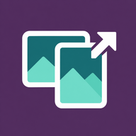

Exportador de Fotografias para Redes Sociais
Recortes rápidos com a sua marca para publicações, stories, miniaturas e pins.
Criado por Susana Quintal
Adicione uma fotografia para começar.
Arraste a camada selecionada na pré-visualização.